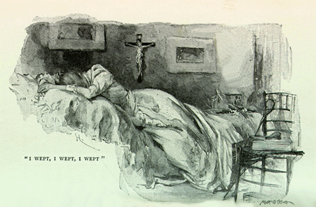

Sunday, February the 7th, 2010
back to: title, date or indexes
OutaSpaceman dropped me a line to inform me that when he searched Google Images for “moorhen”+”mezzotint”, nearly all the results linked to Hooting Yard. I explained to him that all interweb searches lead eventually, by twists and turns, back to here, for it is the uberhub lying at the centre of the entire network, a sort of throbbing pulse from which all else emanates. What I must do, one day, is to discover which single Hooting Yard postage lies at the very core of the hub, is the glistening jewel which, by who knows what mighty and mysterious forces, has generated everything else on the interweb. I would not be surprised to find that the postage in question is something to do with plucky tot Tiny Enid.
Speaking of whom, here is a rare picture of Tiny Enid in later life, taking a break from writing her Memoirs.
